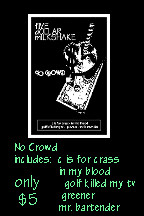

|
|
|
|
|
|
|
|
|
|
|
 A significant improvement on our first tape, we recorded this second tape with Dave
Ackerman at Supersonic studios in Central Square in Cambridge, MA. Mr. Ackerman (as
the bank teller calls him) is a very cool guy with bizarre hair (as of this writing).
As for the musicians, by this point John Haydon had joined the band on bass, and
the band was formerly a "trio". Anecdotes about the recording?
Hmmmmmm.......playing the tamborine is not as easy as it sounds. It's damn near
impossible to play it consistently on-beat with just your hands. I'm sure there are
other funny things that happened, but it was a long time ago and I can't remember anything
else. We have a few copies of this tape still hanging around the warehouse so if
you'd like to get a copy drop us a note. You can check out some of the sounds below.
Also, check out the reviews even more below -- we were so psyched and surprised
that C is For Crass actually won "Song of The Month" in a local Boston
publication......
SONGS FROM NO CROWD
REVIEWS The Noise It's like these former Pennsylvanians have been listening to lots and lots of Rolling Stones albums and the good stuff too, c. 1968-1973. Whatever the reason, their songwriting has improved immeasurably. Maybe they're just working at it. A little harder than before. I dunno. But whatever the reason, the results are surprisingly gratifying. Fact is, the infinitely poignant lament, "C is for Crass," is one of the best local tunes I've heard since God was a pup, and though the other tunes are sketchy betimes, they are all-in-all quite charming, with strange yet exotically appropriate chords you probably won't find in Mel Bay, as well as wierdly apt rhythmic twists and turns, as on "Mr. Bartender." Bueno. "C is for Crass" is my pick for Song of the Month. ****1/2 Demo Universe (05/05/97) There's nothing wrong with this tape but there's nothing overwhelmingly right, either. FDM is a clever, charming, relaxed and scruffy trio with a good record collection. The five songs here variously reminded me of Pearl Jam ("C Is For Crass"), The Band ("Greener") and Television ("Mr. Bartender"), with maybe a little Pixies thrown in, 'cause they're from Boston, after all. So why am I so bored? It's perplexing, but I think songwriting has something to do with it. I'll bet they're good live, though, and have probably got some serious fans, so maybe my opinion doesn't matter. Tell you what, give 'em a listen and tell me why I should get excited about FDM. Union-News Some call it roots rock, others call it Americana, but the initiated know it as just
plain rock 'n' roll. You know - the jangly guitar, three-chord stuff of the Rolling
Stones, The Band and Buffalo Springfield. hEARd Hopefully not an indictment of what the band's shows are like because their recordings are
spectacular. No Crowd is a big improvement on the last tape I received from them called
Ice Cream Headache, the songwriting showing an improvement also. This time around, they've
moved into a different sort of sound, at times a little like the sounds of Counting Crows,
but impressing me more than they have at times. We open with "C Is For Crass", a
song which is a pretty good opener, but much better than this is what follows this one,
"In My Blood" & "Golf Killed My TV" pretty cool. |
|
© copyright 2000-2001 Five Dollar Milkshake
|